Bir devletin nasıl yönetileceğini belirleyen siyasal omurga
Dijital Sergi • Atatürk İlkeleri • Okul Projesi
Cumhuriyetin fikir mimarisini, yeni bir tasarım diliyle keşfet.
Bu sayfa yalnızca bilgi vermek için değil; bir dönemin ruhunu, dönüşüm isteğini ve kurucu düşünceyi hissettirmek için tasarlandı. Altı ilke burada bir ders notu gibi değil, yaşayan bir sergi akışı gibi anlatılıyor.
Kurucu eksen
Egemenlik, akıl ve toplum iradesi aynı zeminde birleşti.
Cumhuriyetin ilk yıllarında atılan adımlar birbirinden bağımsız değil; ortak bir modernleşme vizyonunun parçalarıydı.
Cumhuriyetçilik
Milliyetçilik
Halkçılık
Laiklik
Devletçilik
İnkılapçılık
Toplumu yeniden tanımlayan yurttaşlık ve eşitlik anlayışı
Değişimi sürekli kılan yenilenme ve kalkınma refleksi
Arka Plan
Neden Atatürk ilkelerine ihtiyaç duyuldu?
İmparatorluğun çözülüşü ile Cumhuriyetin kuruluşu arasındaki kırılma, yalnızca siyasi bir dönüşüm değil; hukuk, eğitim, yurttaşlık ve devlet yapısında yeni bir yön arayışıydı.
Osmanlı İmparatorluğu'nun son döneminde yaşanan askerî ve siyasal çözülme, yalnızca bir yönetim değişikliği ihtiyacını doğurmadı. Aynı zamanda hukuk, eğitim, ekonomi ve toplumsal düzen açısından yeni bir başlangıcın zorunlu olduğunu gösterdi.
Milli Mücadele'nin başarısı, bağımsızlığın tek başına yeterli olmadığını ortaya koydu. Yeni devletin hangi değerler üzerinde yükseleceği, nasıl bir toplum hedefleyeceği ve hangi kurumlarla kalıcı hale geleceği de tanımlanmalıydı.
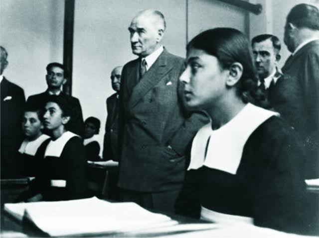
Milli Mücadele
Bağımsızlık sonrasında düzen kurma ihtiyacı
Savaşın kazanılması, nasıl bir devlet kurulacağı sorusunu daha görünür hale getirdi.
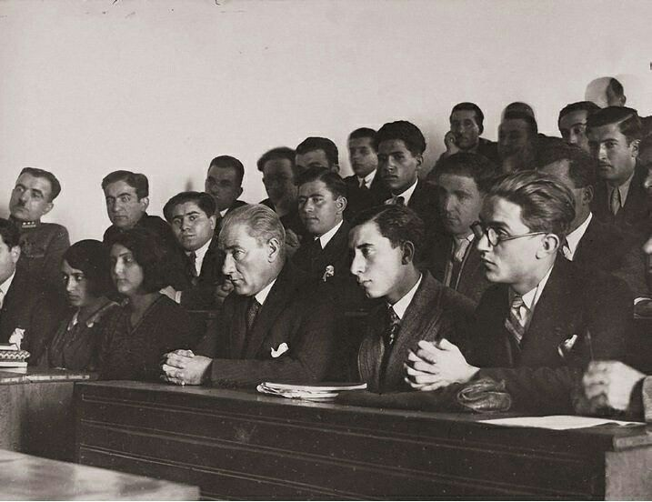
Egemenlik
Yönetim gücünün kaynağı yeniden tanımlandı
Meşruiyet, kişi merkezli yapıdan çıkarılıp millet iradesine dayandırıldı.
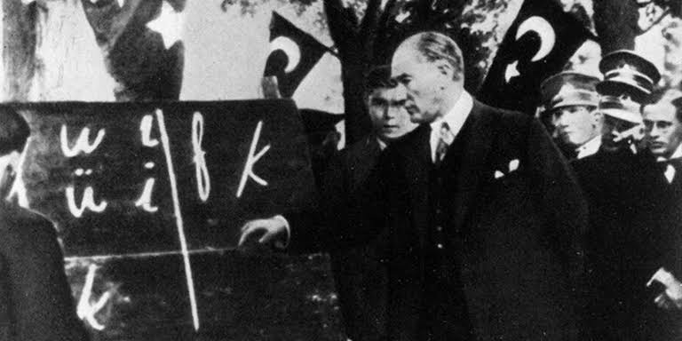
Yenilenme
Toplumun kendini sürekli güncellemesi hedeflendi
İlkeler, durağan değil gelişen bir Cumhuriyet fikrinin kısa özeti oldu.
Altı İlke
Her ilke, Cumhuriyet projesinin ayrı ama birbirine bağlı bir taşıdır.
Aşağıdaki kartlar, her ilkenin tarihsel bağlamını, doğurduğu sonucu ve bugün bıraktığı düşünsel izi birlikte okumak için tasarlandı.
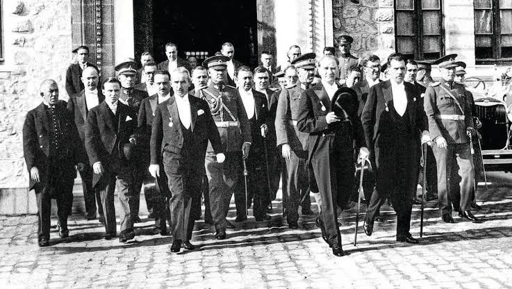
Tarih akışı
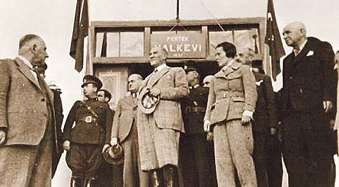
Tarih akışı
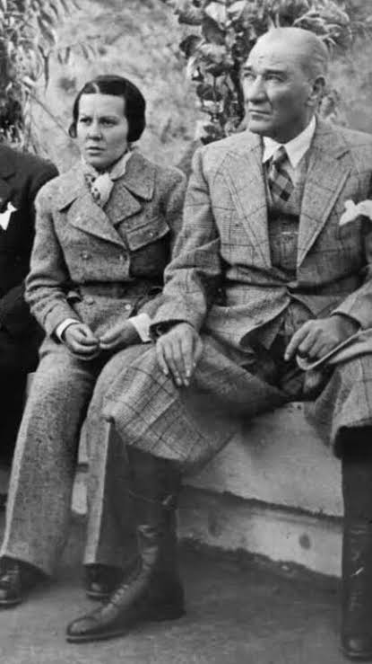
Tarih akışı
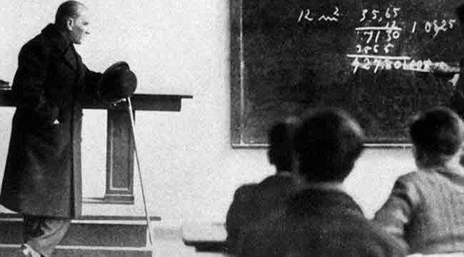
Tarih akışı
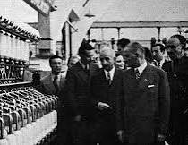
Tarih akışı
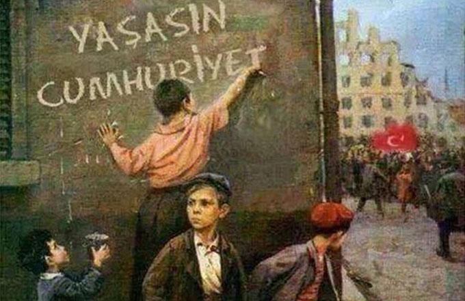
Tarih akışı
Zaman Çizgisi
1919'dan 1937'ye uzanan dönüşüm adım adım şekillendi.
İlkeler bir anda ortaya çıkmadı; her biri savaş yıllarından anayasal güvenceye uzanan birikimli bir sürecin içinde görünür hale geldi.
Samsun'a çıkış
Ulusal direnişin örgütlü ve siyasal bir programa dönüşeceği süreç başladı.
TBMM'nin açılması
Millet iradesinin kurumsal temeli güçlenerek Cumhuriyetçilik için zemin oluştu.
Cumhuriyetin ilanı
Yönetim biçimi açıkça tanımlandı; egemenliğin kaynağı millet olarak belirlendi.
Halifeliğin kaldırılması
Laiklik ve eğitim birliği yolunda kurumları yeniden şekillendiren adımlar atıldı.
Harf Devrimi
Bilgiye erişim ve kültürel yenilenme günlük hayatın görünür bir parçası haline geldi.
Yurttaşlık haklarının genişlemesi
Eşit yurttaşlık anlayışı sosyal ve siyasal haklarla daha belirgin biçimde kuruldu.
İlkelerin anayasaya girmesi
Altı ilke, Cumhuriyetin resmî düşünce çerçevesinde anayasal dayanak kazandı.
Görsel Katman
İlkelerin toplum hayatına yansıyan yüzü
Milli egemenlik, eğitimde yenilik ve kalkınma hamlesi; Cumhuriyetin gündelik yaşamdaki en görünür dönüşüm yüzlerinden bazılarıydı.
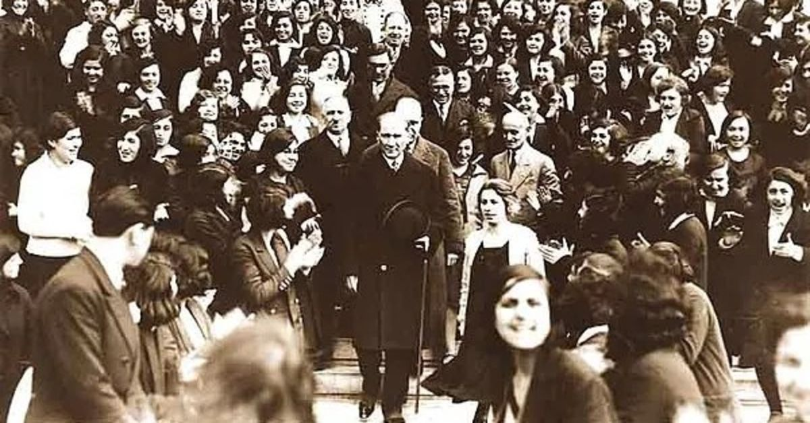
Millet iradesinin görünür hali; Cumhuriyet ilkelerinin toplumsal temeli.
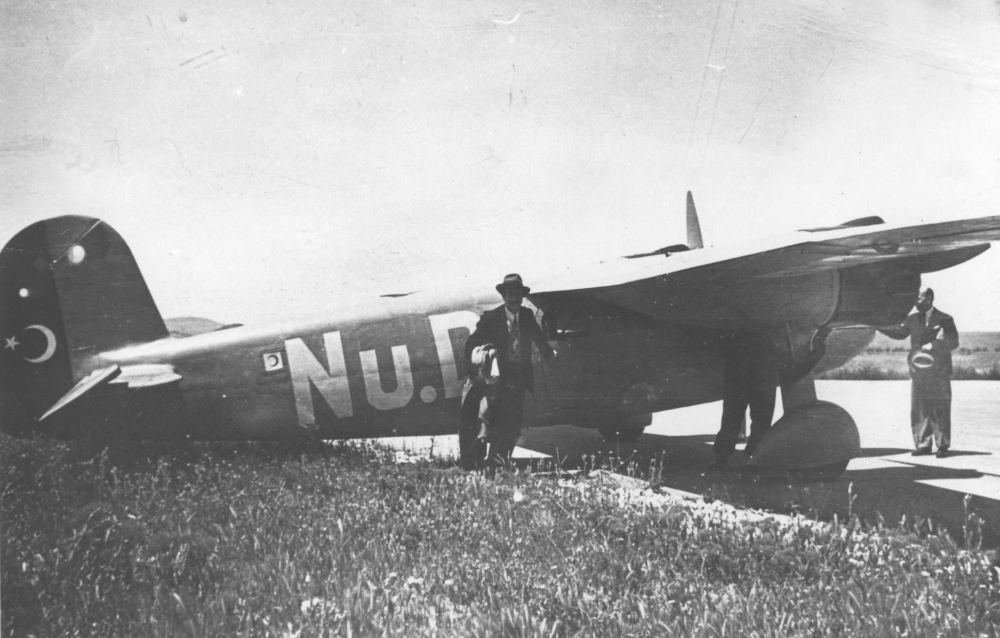
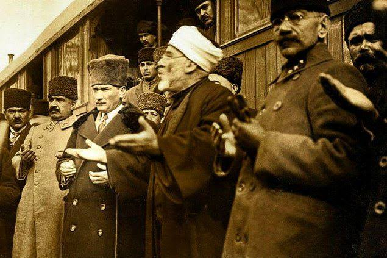
Bugüne Etkisi
Bu ilkeler neden bugün hâlâ konuşuluyor?
Çünkü bu başlıklar geçmişte kalmış reform listeleri değil; Türkiye'de devlet, toplum ve kamusal düzenin hangi değerler üzerinde kurulacağı sorusunun özeti.
Çünkü mesele yalnızca geçmişte yapılmış reformlar değil; Türkiye'de devlet-toplum ilişkisinin hangi değerler üzerine kurulduğu sorusudur. Cumhuriyetçilik siyasal meşruiyeti, Halkçılık eşit yurttaşlığı, Laiklik ortak hukuk zeminini, Devletçilik ekonomik dayanıklılığı, İnkılapçılık ise süreklilik taşıyan değişimi temsil eder.
Demokratik meşruiyet
İktidarın kaynağını yurttaş iradesine dayandıran yaklaşım, modern yönetimin merkezine yerleşti.
Kamusal akıl ve hukuk
Ortak yaşamın eşitlik ve rasyonel hukuk ilkeleri üzerinden kurulması kalıcı hale geldi.
Değişime açık toplum
Yenilenme fikri, toplumun çağın ihtiyaçlarına göre kendini güncelleme kapasitesini güçlendirdi.